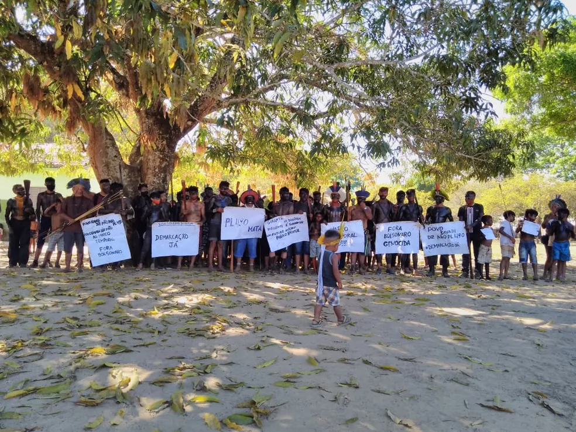
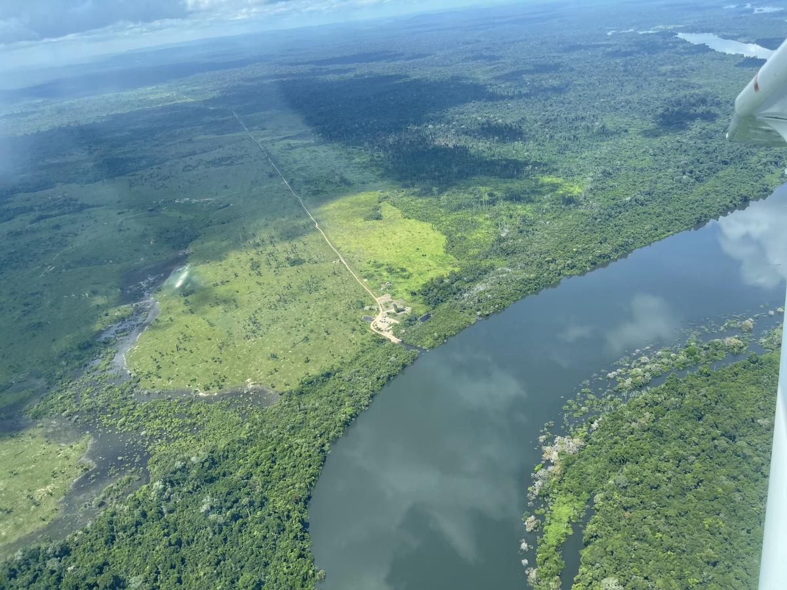

-

A Coordenação Regional Xingu, unidade descentralizada da Fundação Nacional do Índio (Funai) com sede em Canarana (MT), participou do principal ritual sagrado da etnia Kalapalo realizado no Parque Indígena do Xingu, estado do Mato Grosso.Cerca de 1,7 mil indígenas participaram do evento, com integrantes das etnias.
Saiba mais -

Um grupo de indígenas do Parque Nacional Xingu fez um protesto na Aldeia Capivara, na região de São Félix do Araguaia, a 1.159 km de Cuiabá, nesta sexta-feira (25), contra a aprovação do Projeto de Lei 490, de 2007, que prevê mudanças no reconhecimento da demarcação das terras e do acesso a povos isolados.
Saiba mais -

O Xingu está por um fio e corre o risco de ser devastado pela invasão ilegal de grileiros, garimpeiros e madeireiros. O monitoramento por satélite da Rede Xingu+ detectou uma estrada clandestina de 42,8 km que atravessa duas Unidades de Conservação (UC) no coração do Xingu: a Estação Ecológica (ESEC) Terra do Meio e a Floresta Estadual do Iriri.
Saiba mais